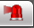

Note: The equipment has to support this function.
The alarm menu is where you can subscribe to alarm notifications. When an event occurs, you can view the alarm information on the right pane. Please check the box for an alarm tone or prompt to choose how to receive your alerts.
Alarm Type: There are several event triggers to choose from. Check the box next to any alarm type you want to receive alerts for.
Tips: If you are outside the alarm menu, you can view an

icon on the current window once a selected alarm event occurs. The system will automatically record the alarm information. Once you click the alarm menu, the alarm icon will disappear.Note: Once a selected alarm event occurs, there will be no video in the alarm menu. Check the alarm list on the right pane to view the corresponding alarm information.
Alarm Tone: Check the box here and you can browse for an audio file. When an alarm occurs, the system will play the selected audio to alert you.